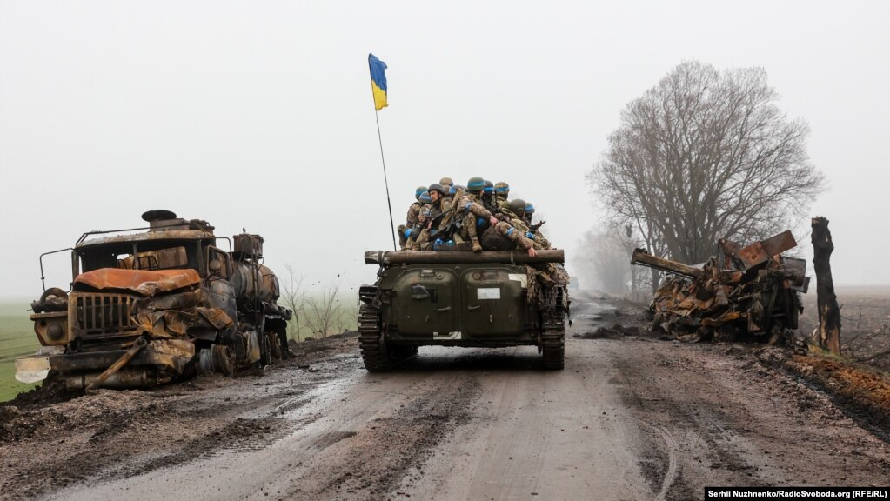

Коли 24 лютого 2022 року Росія розпочала повномасштабне вторгнення в Україну, вона розв'язала найбільшу війну в Європі з часів Другої світової війни.
Ця війна понівечила життя мільйонів людей. Але Україна встояла, залучилася підтримкою Заходу і прагне звільнити всю свою територію.
Ось деяка фотохронологія подій року російсько-української війни
-
Рік розв'язаної Росією масштабної війни проти України, на думку аналітиків, показав, що російській армії важко досягати переваг у боях, а свої невдачі на фронті вона компенсує терором проти цивільного населення.
У перший же день вторгнення, 24 лютого 2022 року, російські війська обстріляли Чугуїв на Харківщині.
Фото 53-річної вчительки Олени Курило, яка пережила той обстріл, опублікували світові агенції, а вуличні художники зробили з нього мурали.
«Я ніколи не думала, що таке може статися», – сказала Олена про напад Росії

-
Російські підрозділи в'їжджають через Перекоп з окупованого Криму на материкову частину України.
Ранок 24 лютого 2022 року...Ситуація на півдні стрімко погіршувалася.
Вже 1 березня російська бронетехніка прорвалася до Херсону.
Херсонці без зброї зупиняли техніку агресора, але ЗСУ їм не могли допомогти.
Розтягнуті по довгій лінії фронту українські сили оборони вимушено відступали до Миколаєва.

-
Острів Зміїний, оборонці якого увійшли в історію фразою «Русский военный корабль, иди на х..!».
Такою була відповідь українського прикордонника на вимогу здатися, що надійшла з крейсера «Москва» 24 лютого 2022 року.
13 квітня цей флагман ЧФ росії отримав ушкодження, унаслідок яких на наступний день затонув.
Прикордонники із о. Зміїний були звільнені з полону за обміном, а сам острів деокупований 30 червня.
На світлині момент встановлення прапора України 7 липня 2022 року

-
Другий день великої війни: українські військові перекрили міст у Києві в очікуванні російської танкової колони. 25 лютого 2022 року

-
Із перших годин вторгнення опір російській армії на всіх напрямках її просування – спільно із Силами оборони почали чинити добровольці, які мали бойовий досвід ще з 2014 року.
Знищені російські «Тигри-М» у Харкові.
Україна, 28 лютого 2022 року

-
Велике значення для оборони Києва мало знищення російського десанту на летовищі у Гостомелі Київської області.
На оприлюдненій 4 березня Міністерством оборони України фотографії –підбита під час боїв за Гостомель БМД-2 31-ї ОДШбр армії Росії.

-
У той час, як на підступах до Києва точаться криваві бої, на столичному залізничному вокзалі тисячі людей чекають на евакуаційні потяги, щоб виїхати на Захід країни.
У вагони заходило стільки людей, скільки могло поміститися стоячи. 4 березня 2022 року
Ось стаття

-
Одночасно із сухопутним вторгненням на кількох напрямках (зокрема і з території Білорусі) та атакою з моря, Росія почала обстрілювати і бомбардувати українські міста – Чернігів, Маріуполь, Київ, Харків, Запоріжжя, Одесу, Миколаїв...
Знищений російським ударом житловий будинок у Чернігові.
4 березня 2022 року

-
Результат російського ракетного удару по Києву у день візиту до України генерального секретаря ООН Антоніу Гутерріша.
Внаслідок цього удару 28 квітня 2022 загинула журналістка Радіо Свобода Віра Гирич

-
Внаслідок дій Росії мільйони цивільних в Україні під час обстрілів та повітряних тривог були вимушені ховатися у підвалах і бомбосховищах. А у Харкові, Кривому Розі, Дніпрі і Києві такими укриттями стали також станції метро.
На фото: кияни разом із своїми домашніми тваринами ночують у метро. 8 березня 2022 року

-
Президент України Володимир Зеленський біля свого офісу у Києві, 14 березня 2022 року.
Лідери західних держав у перші години російського вторгнення пропонували Зеленському притулок.
«Серед усіх, хто телефонував мені, не було нікого, хто вірив, що ми зможемо вистояти», – сказав Зеленський

-
Особливу сторінку в історії російсько-української війни вписала оборона заводу «Азовсталь», що тривала з 18 березня до 20 травня.
Уцілілі в боях за Маріуполь бійці полку «Азов», морпіхи і прикордонники, переховуючись у бункерах заводу, відбивали постійні атаки противника, аж поки в них не закінчилася вода і їжа.
16 травня Генштаб ЗСУ, щоб зберегти життя особового складу, віддав наказ оборонцям вийти з «Азовсталі». Вони потрапили в полон.
Понівечений бомбардуванням і обстрілами завод «Азовсталь». 16 травня 2022 року. Автор фото: боєць Дмитро Козацький
Ось відео

-
Коли Росія не змогла захопити Київ ні за три дні, як спочатку планувала, ні за місяць, а натомість понесла величезні втрати, українські Сили оборони почали з боями витісняти розбиті російські підрозділи за межі кордонів Київської та Чернігівської областей.
Розбита російська техніка обабіч дороги, якою рухаються українські військові.
Чернігівщина, початок квітня 2022 року
Ось Мапа війни в Україні
 -
Наприкінці року широкомасштабної російсько-української війни Україні вдалося нарешті переконати західних союзників зміцнити ЗСУ сучасними танками.
Тепер обговорюється питання про можливість надання Україні літаків.
Українські військовослужбовці позують на танку Challenger 2 на військовій базі Bovington Camp на південному заході Великої Британії, 22 лютого 2023 року